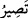

(O yol) yaratma ve mülk olarak “göklerin ve yerin sâhibi olan Allah’ın yoludur.”
Onun dışında bir yol değildir. “Dikkat edin, bütün işler sonunda” yalnız “Allah’a
döner”
“Sırat” kelimesini ism-i celîl olan Allah lafzına muzaf kılarak Allah’ı da “göklerin ve
yerin sâhibi” olarak vasıflandırmak, bu yolun şânını yüceltmek, doğruluğunu takrîr
etmek ve bu yola girmenin gerekliliğini teyid etmek içindir. Zîrâ göklerde ve yerde olan
bütün varlıkların yaratma, mülk ve tasarruf bakımından Allah’a âid olması, bu durumu
tam ve zarûri olarak gerekli kılmaktadır.
Bazıları şöyle demiştir: Biz bazı milletleri ezelde (İslâm’a) dâvet ettik. Onlar da bu
dâvete icâbet ettiler. Sen de onları bize delâlet ve hidâyet etmektesin. Peygamberimiz
(s.a.) de Kur’an gibi nur olduğu için hidâyet edici olmuştur. Yine onun nûrunun îman ve
Kur’an’la olan alâkasından dolayı Peygamber (s.a.)’in ahlâkı, Kur’an ahlâkı sayılmıştır.
Şâir der ki:
Ey Allah’ın nûru! Hakk’ın nûru senin alnında âşikâr olmuştur.
Ezel sırrı senin cemâlinin nûruyla var olmuştur.
Âyetteki “dikkat edin” ifâdesi, “biliniz ki” anlamında insanların gözlerini açmaları
için bir hatırlatma yahut delil olarak bir tenbih ve uyarıdır. “Bütün işler sonunda
Allah’a döner,” başkasına değil. Göklerde ve yerde olan bütün işler kesin olarak
Allah’a âiddir. Artık bir takım bağlantı ve aracılar ortadan kalkmıştır. Kıyâmet de böyle
olacaktır. Buna göre buradaki “__WORD__/tasiru” fiili istikbal yani gelecek mânâsına
hamledilir. Bu ifâdede hidâyet üzere dosdoğru yolda olanlar için bir vaad, bu yoldan
sapmış olanlar için ise bir tehdid olduğu âşikârdır.
Bahru’l-ulum’da şöyle denilmiştir: Dünya ve âhirette bütün yaratıkların işleri hep
yalnız Allah’a âiddir. Bu işleri yalnız Allah Teâlâ sevk ü idare eder. Hiçbir iş Allah’ın
hüküm ve irâdesinin dışına çıkamaz.
Muhakkiklere göre bütün işlerde, vakitler ve hallerde dönüş O’nun. Perdelerin
kalkması ve müşâhede vasıtaları da bunu göstermektedir. Kesretin sûreti vahdetin
perdesidir. Gaybet hâlimiz huzurun nûruna mânidir. “Bütün işler Allah’a döner” sırrını
kalb gözünü aç da gör. Çünkü Allah her işin başı ve ana kaynağı olup son ve dönüş de
yine O’nadır.
Herkes isteyerek yahut istemeyerek yokluğa mahkûm olacaktır. Bir defa Hasan Basrî
Hazretleri bir cenazeye katıldı. Ölüyü kabre koyup üzerine toprak attıklarında Hasan bu
toprağa oturup ağlamaya başladı. O kadar ağladı ki toprak çamura döndü. Sonra dedi ki:
“Ey insanlar, eninde sonunda görüyorsunuz ki dünyanın sonu bu mezardır. Eninde
sonunda görüyorsunuz ki kabir âhiret menzillerinden birisidir. Sonu böyle, yani mezar
olan bir âlemle neden övünüyorsunuz? Evveli böyle, yani mezar olan bir âlemden niye
korkmuyorsunuz? Evveli ve sonu böyle ise ey gaflet ehli evvel ve âhirdeki iş için
hazırlık yapınız.”